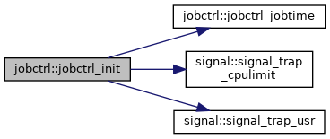
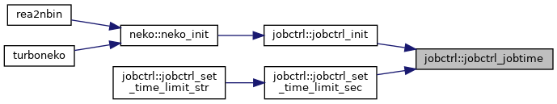

jobctrl Module Reference
Job control. More...
Data Types | |
| interface | jobctrl_set_time_limit |
Functions/Subroutines | |
| subroutine | jobctrl_init () |
| Initialize jobctrl. More... | |
| subroutine | jobctrl_set_time_limit_str (limit_str) |
| Set a job's time limit (in walltime 'HH:MM:SS') More... | |
| subroutine | jobctrl_set_time_limit_sec (sec) |
| Set a job's time limit (in seconds) More... | |
| logical function | jobctrl_time_limit () |
| Check if the job's time limit has been reached. More... | |
| real(kind=rp) function | jobctrl_jobtime () |
| Returns a job's time in seconds relative to the first call. More... | |
Detailed Description
Job control.
Function/Subroutine Documentation
◆ jobctrl_init()
| subroutine jobctrl::jobctrl_init |
Initialize jobctrl.
Definition at line 50 of file jobctrl.f90.
Here is the call graph for this function:

Here is the caller graph for this function:
◆ jobctrl_jobtime()
| real(kind=rp) function jobctrl::jobctrl_jobtime |
Returns a job's time in seconds relative to the first call.
Definition at line 120 of file jobctrl.f90.
Here is the caller graph for this function:

◆ jobctrl_set_time_limit_sec()
| subroutine jobctrl::jobctrl_set_time_limit_sec | ( | integer | sec | ) |
Set a job's time limit (in seconds)
Definition at line 90 of file jobctrl.f90.
Here is the call graph for this function:
Here is the caller graph for this function:
◆ jobctrl_set_time_limit_str()
| subroutine jobctrl::jobctrl_set_time_limit_str | ( | character(len=*) | limit_str | ) |
Set a job's time limit (in walltime 'HH:MM:SS')
Definition at line 65 of file jobctrl.f90.
Here is the call graph for this function:
◆ jobctrl_time_limit()
| logical function jobctrl::jobctrl_time_limit |
Check if the job's time limit has been reached.
Definition at line 102 of file jobctrl.f90.
Here is the call graph for this function:
Here is the caller graph for this function: